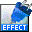

Download QTVR Matte Download QTVR Matte
Download QTVR Matte Download QTVR MatteThe current version of QTVR Matte is 1.0.2.
The download file is an archive containing QTVR Matte, and a copy of the User's Manual.
 |
QTVR Matte 1.0.2 | Download (StuffIt! 150 K). Download (MacBinary 208 K). |
QTVR Matte is distributed as US$50 trialware and unlicensed copies will draw a green line across each frame. Single user, site, and worldwide licenses are available from Kagi.
There is no prerelease version of QTVR Matte. Watch this space for future releases.
Home | Services
| Products | Consultants
| Clients | Corporate
| Related | WashTech